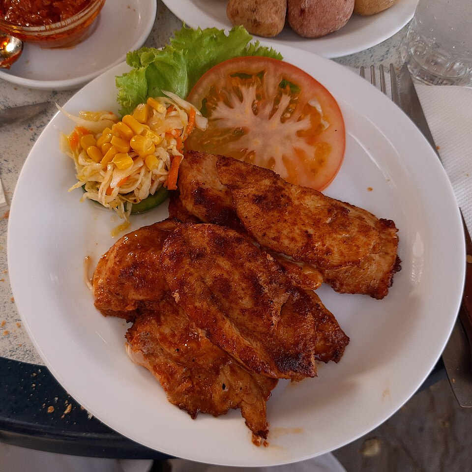

Dinner, Lunch, Protein, Prep, By Claude
2 lb boneless skinless chicken breasts per bag, pounded to an even 3/4 inch (or thin-sliced cutlets)
1. Greek lemon-oregano
3 tablespoons olive oil
2 lemons, zest and juice
4 garlic cloves, grated
1 tablespoon dried oregano
1 teaspoon kosher salt, 1/2 tsp black pepper
2. Tandoori yogurt
3/4 cup plain Greek yogurt
1 tablespoon lemon juice
3 garlic cloves + 1 tbsp fresh ginger, grated
2 teaspoons garam masala
1 teaspoon each cumin and smoked paprika
1/2 teaspoon turmeric, 1/4 tsp cayenne
1 teaspoon kosher salt
3. Soy-ginger-honey
1/4 cup low-sodium soy sauce or tamari
1 1/2 tablespoons honey
1 tablespoon rice vinegar
1 tablespoon toasted sesame oil
1 tablespoon fresh ginger + 3 garlic cloves, grated
4. Chipotle-lime
2 chipotles in adobo, minced, + 1 tbsp adobo sauce
2 limes, juiced
2 tablespoons olive oil
3 garlic cloves, grated
1 teaspoon each cumin, dried oregano, honey, kosher salt
5. Harissa-lemon
3 tablespoons harissa paste
2 tablespoons olive oil
1 lemon, zest and juice
2 garlic cloves, grated
1 teaspoon ground cumin, 1 tsp kosher salt
Five marinades, none with fish sauce, each sized for 2 lb of chicken breast. Bag the chicken in marinade raw and freeze it flat. It marinates while it thaws, so dinner is a 12–20 minute cook. The cooking methods at the bottom also work for Whole Foods' pre-seasoned breasts.
Pound the chicken to an even thickness. This does more than anything else to keep breasts juicy.
Whisk each marinade in a gallon zip bag. Add 2 lb chicken, squeeze out the air, massage to coat, and label with name and date.
To cook this week: refrigerate 2–24 hours. The tandoori marinade can go the full 24 hours; limit the citrus ones to 12 hours or the texture gets mushy. To freeze: lay the bags flat for up to 3 months, and thaw overnight in the fridge (it marinates as it thaws).
Skillet (fastest): heat a lightly oiled skillet over medium-high and cook 5–6 minutes per side until 160°F; it rises to 165°F while resting.
Sheet pan (all 4 portions or store-bought seasoned breasts): 425°F for 16–20 minutes. Broil the last 2 minutes to char.
Air fryer: 380°F for 12–15 minutes, flipping halfway.
Rest 5 minutes, then slice. Serve with batch rice or potatoes and a vegetable, or over salad.
Pairings: Greek with tzatziki and cucumber-tomato salad; tandoori with rice and quick-pickled onions; soy-ginger with rice and broccoli; chipotle-lime in burrito bowls; harissa with farro and roasted carrots.
~320 CALORIES (8 oz raw chicken + marinade)
50G PROTEIN
10G FAT
3–8G CARBS
Photo: Grilled chicken breast, Santo Domingo, La Palma.jpg by Gerda Arendt, CC0, via Wikimedia Commons. Representative image, not this exact recipe.